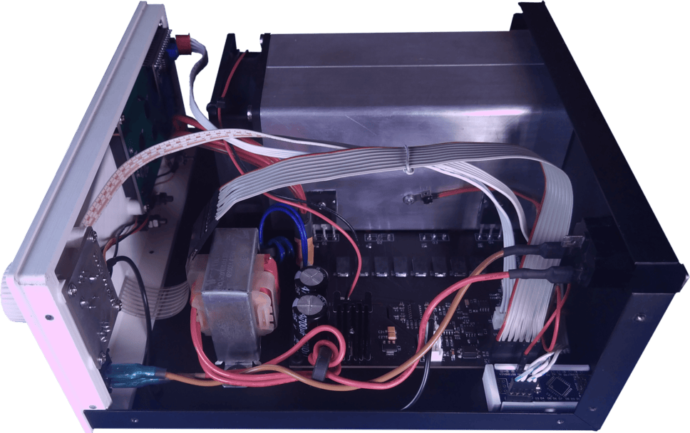
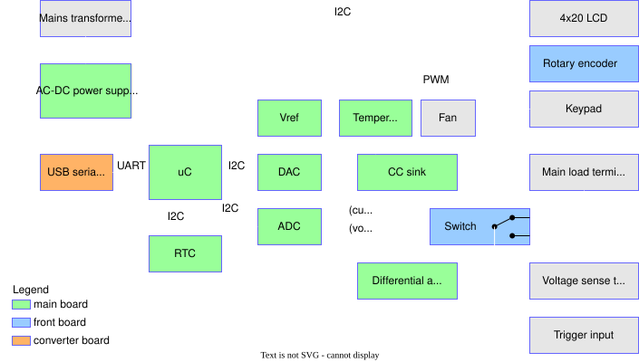
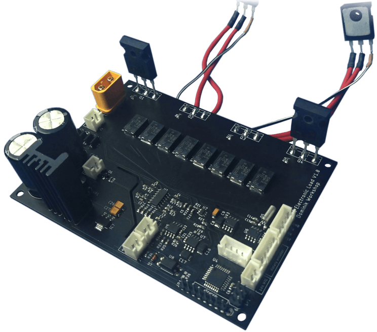
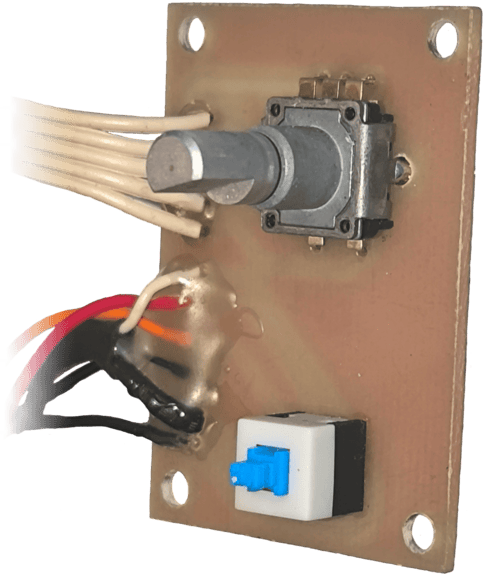
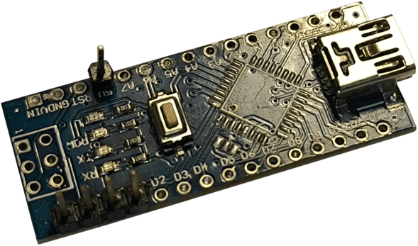
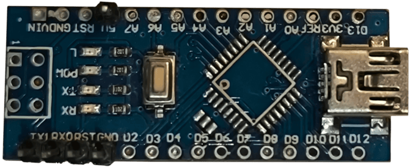
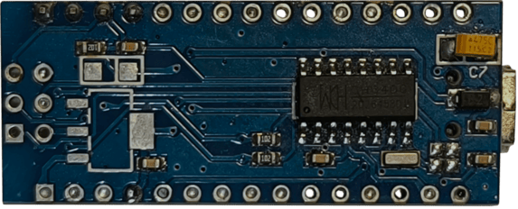

Hardware Design
🔩 Mechanical
Panel Layouts
The diagrams below show the layout of all external controls and connectors:

Annotated Front Panel Wireframe

Annotated Back Panel Wireframe
Enclosure and Cooling
The enclosure is a hybrid construction designed for durability and ease of assembly. The main chassis is formed from 1mm thick sheet steel, which was CNC laser-cut and then bent into shape. This provides a sturdy frame for all internal components.
The front panel is a custom 3D-printed part, allowing for precise mounting of the display, keypad, switches, and connectors.
Heat from the power MOSFETs is dissipated by a large, tunnel-style aluminum heatsink, which is actively cooled by a temperature-controlled fan. The complete internal assembly can be seen in the image below.

Internal view of the electronic load
⚡ Electronics
Input Specifications
-
Load power input (Front panel)
- Max voltage: 50V DC
- Max current: 8A
- Max dissipated power: 300W (10 min)¹ / 200W (cont.)²
-
Remote voltage sense input (Front panel)
- Max voltage: 50V DC
-
Mains power input (Back panel)
- Voltage: 230V AC
- Max power consumption: 10W
-
Trigger input (Front panell)
- Max voltage: 5V DC
¹ Assumes ambient temperature of 25°C.
² Assumes an initial heatsink temperature of 25°C.
Architecture Overview

Electronics block diagram
The system's architecture is orchestrated by an ATmega328P microcontroller. It interfaces with several key components via I2C, including a 12-bit MCP4725 DAC to set the load current, a 16-bit ADS1115 ADC to measure voltage and current, and an MCP79410 RTC for time-critical operations like battery capacity testing.
The core of the load is the Constant Current Sink, controlled by the DAC and built around AD8630 operational amplifier and IRFP250 power MOSFETs. The ADC measures the current flowing through this sink and the voltage at the input terminals. A switch, controlled from the front panel, allows the voltage measurement to be taken either from the main power terminals or from the remote sense terminals via a differential amplifier built on an OPA277 op-amp. User interaction is managed through a rotary encoder, keypad, and a 4x20 LCD display, while PC communication is handled by a dedicated USB-to-UART converter board.
A transformer provides AC power, which is converted by the internal power supply section into three DC rails: +12V (for the cooling fan), +5V (for logic and analog circuits), and -5V (for the symmetrical supply of the differential amplifier).
PCBs
The system's electronics are distributed across three distinct PCBs. The functional blocks residing on each board are color-coded for clarity in the Electronics block diagram shown above.
- Main board: This two-layer PCB performs all core control, measurement, and power handling functions of the electronic load.

- Front board: This single-layer PCB functions as the user interface board, handling manual controls and routing for the voltage measurement signals.

- Converter board: Acts as a dedicated communication bridge for PC control, data acquisition and allows for programming of the main microcontroller. This was implemented cost-effectively by using a modified Arduino Nano board with its original microcontroller desoldered, leaving only the
CH340USB-to-serial IC functional.


